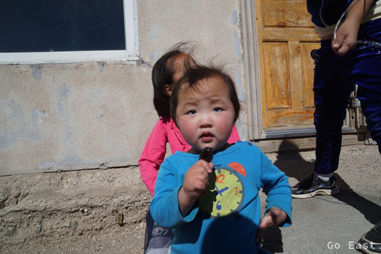

The hotel is confirmed as a no star. There is no hot water and very sparse cold water along with a drain from the sink which drips directly onto the floor. For my tea in the Thermos, I kindly get a used teabag to go with warm water. We refrain from further breakfast, because we want to go now at 8:00. We have 650km ahead of us. Hopefully on asphalt. Temperature is 2 degrees. It was below zero during the night as puddles are still frozen. We set off under a blue sky and sunshine. Along with my thin tea, I have some salami with mustard packed for the car ride. What could be better for a great start into the day?
The good road continues, albeit intermittently. There is actually asphalt along our way. It is not so bad, as it has just a few potholes and waves in it, but on the whole it is okay. The country landscape changes from desert to steppe and gets a bit greener. We take a break and eat a good vegetable soup with potatoes and chuncks of sheep meat.


I book a room with my cell phone at the Oasis Hostel in Ulan Bator, which is the meeting point for our Overlander bike transportation. TQ has to pay a fine twice because it is not allowed to carry motorcycles in his van. It is already dark when we arrive in Ulan Bator and TQ is afraid to drive in the big city. He contacts his network and dubious characters climb up and drive the van quite rough, so I hope we can reach the hostel 5km away.
The 5km then take about 1 hour because the 'friends' have a terrible driving style and know everything better and do not want to listen to our GPS-based instructions. Finally we make it to the Hostel Oasis and everything works out with the room.
We go to the nearby supermarket and get some food for dinner. We are happy to have made it to Ulan Bator safely with our bikes.
The three-day ride with a permanent stream of Mongolian folk music will remain imprinted into my memory. TQ moves on with his friends. He leaves the van with the motorcycles inside and keys with us because we will unload it together in the morning.